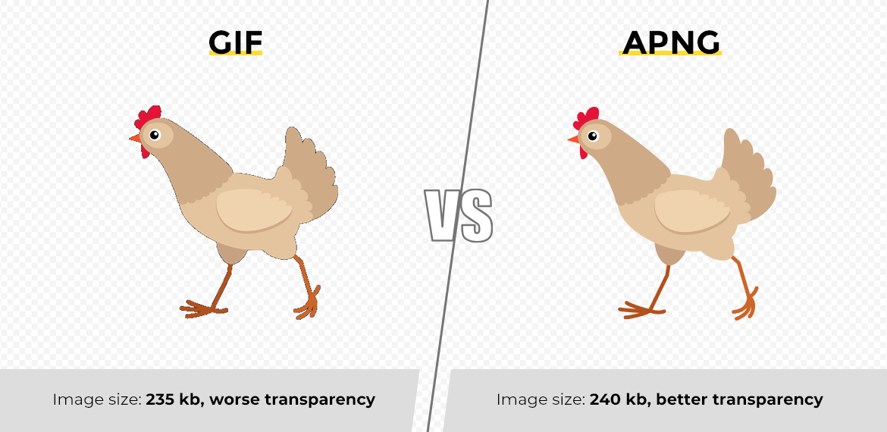
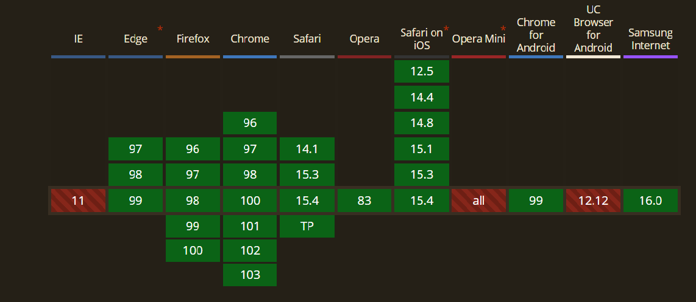
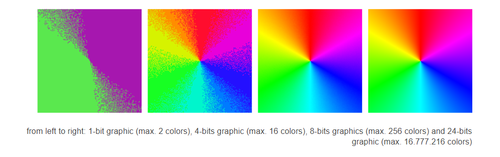
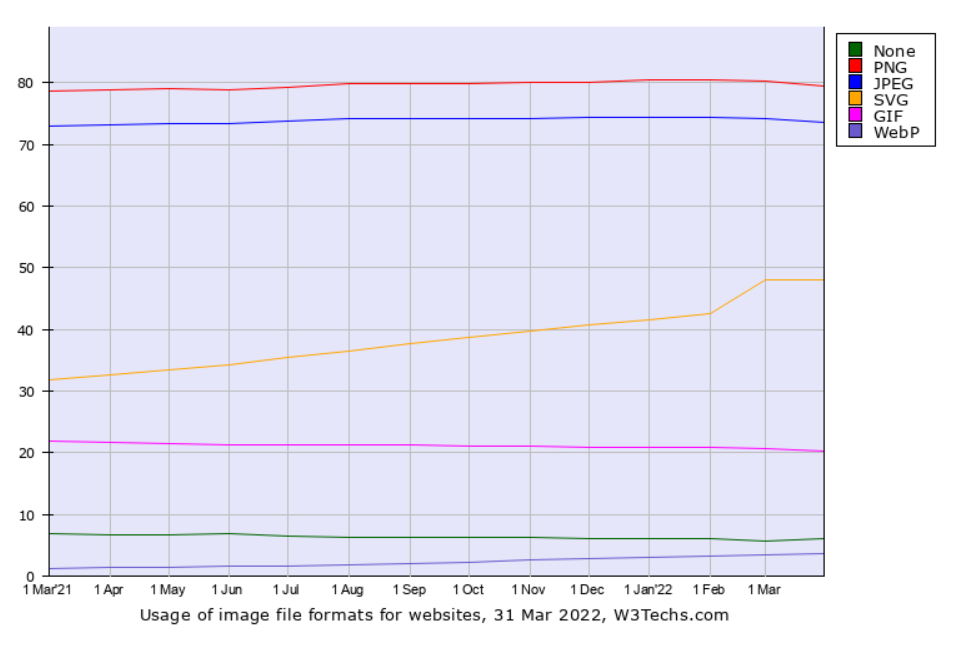
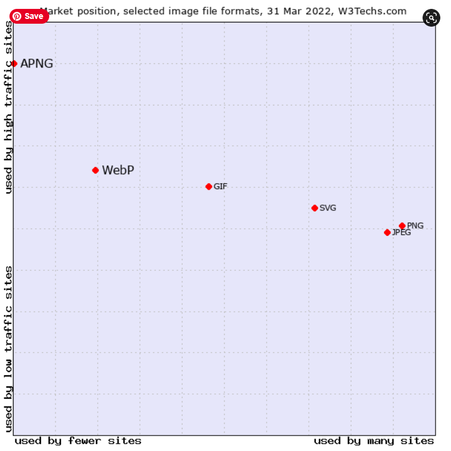
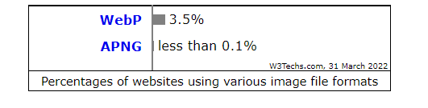

Animated Portable Network Graphics (APNG)
What Is It?
What is it?
It extends the popular Portable Network Graphics (PNG) file format specification to allow images to be animated similarly to animated GIF files with additional features. The first frame of an APNG file is stored as a normal PNG. Since it is an extension of PNG, most standard decoders will be able to display the file without additional work.
Basically, it is a PNG file with additional chunks of data to allow for animations.
Why Does It Exist?
History
It was first developed by Mozilla Corporation in 2004 to store animations needed in UIs (e.g. loading throbbers) to replace MNG animations which were deprecated the year before. MNGs had less functionality than APNGs with a much larger file size due to their decoder, the thing that will read the read and extract headers from the sequence of bytes.
Why isn't it more mainstream?
APNG had a lukewarm reception on release as maintainers on the PNG format debated that their format was strictly a single-image format and it was seen as such in the wider community. The rationale was that applications do not need and will not support multiple images per file due to having separate file formats for animations because a single image and a sequence of images are fundamentally used differently.
The only way for a software to correctly distinguish between PNG and APNG is by reading the ancillary chunks which aren’t required to use PNGs, so if a software didn’t know about APNGs, the first frame would show up as a typical PNG.
So with the maintainers of the file format against the idea of this implementation and the data of the animation hidden inside ancillary chunks that decoders used in applications could skip, APNG never grew in popularity.
Web Browser Support
When an application does not have APNG support, it is treated as a PNG and only the first frame is displayed.
| Browsers | Versions |
|---|---|
| Google Chrome | 96-102 |
| Firefox | 96-100 |
| Microsoft Edge | 97-99 |
| Safari | 14.1-15.4 |
| Opera | 11 |
| Safari on IOS | 12.5-15.4 |
| Chrome for android | 99 |
| Samsung internet | 16 |
| Internet Explorer | not supported |
How Does It Work?
File Structure
Since the APNG is an extension on the PNG file format, the base structure of the file/datastream is the same.

The above image shows the file structure of a PNG file without a PLTE chunk.
Critical Chunks
Critical Chunks are parts of data that must be present in the datastream for a successful decode of a PNG/APNG image and they must appear in this order:
- 1 PNG Signature
- 1 IHDR chunk
- 1+IDAT chunks
- 1 IEND chunk
A Palette (PLTE) chunk can also be added after the IHDR as a critical chunk but is optional depending on the colour type you choose.
A PLTE chunk must exist if you use colour type:
- 3 (indexed-colour/Palette-Based)
Can appear in:
- 2 (Truecolor/RGB) and 6 (Truecolor/RGB with Alpha)
And must not be in the datastream if you use:
- 0 (Grayscale) and 4 (Grayscale with Alpha channel)
PNG Signature
All APNGs start with a PNG signature header that communicates that the subsequent data will be a PNG starting with an IHDR chunk and ending in an IEND chunk
IHDR - Image Header
This chunk must appear first after the PNG signature and contains information on the PNG's:
- Width
- Height
- Bit Depth
- Colour Type
- Compression Method
- Filter Method
- Interface Method
IDAT - Image Data
This chunk contains the actual image data so this is where you would store multiple frames of your animation and they must appear consecutively. They do not have a fixed size and boundaries have no semantic significance as all of them are concatenated together in the compressed datastream.
The first IDAT chunk is the default image shown if the decoder encounters an error.
IEND Image trailer
Must appear last and it marks the end of the PNG/APNG datastream. Its data field is also empty.
Ancillary chunks
These chunks are not necessary if you want to successfully decode a PNG/APNG file. The APNG specifications add three new ancillary chunks.
- acTL: The Animation Control Chunk
- fcTL: The Frame Control Chunk
- fdAT: The Frame Data Chunk

Animation control chunk (acTL)
This appears before the IDAT chunks and communicates to the decoder the file is an APNG along with the number of frames and the number of times to loop the animation. The number of frames must equal the number of fcTL chunks or an error is thrown.
Frame control chunk (fcTL)
Exactly one these chunks must appear before the first IDAT or fdAT chunk of the frame it applies its content to.
The information that fcTL chunk holds for the upcoming frame is:
- Sequence number of the animation chunk.
- Width and height of the following frame.
- X and Y position at which to render the following frame.
-
A frame delay fraction numerator/denominator that will decide the time to display the
current frame.
- If the numerator is 0 then the decoder will render the frame as quickly as possible, though programs will set a more reasonable lower bound.
- How the next frame should be disposed of before rendering the subsequent frame.
- Whether the frame is to be alpha blended into the previous frame or completely replace it

The image on the right shows how translucency can be applied to an object using the alpha channel.
Frame data chunk (fDat)
fdAT chunks have the same function and similar structure as an IDAT chunk. The only difference is that fdDAT chunks have an additional 4 bytes at the start that indicates the sequence number again.
Chunk Sequence Numbers
A 4 byte sequence number appears in both the fcTl and fdAT chunks and these are used to detect or fix the sequence of the frames. The first chunk must contain sequence number 0 and the remaining sequences must be in order, without gaps or duplicates.
Invalid APNG Handling
As frames can be displayed before the entire image has been read, errors may not be detected until partway through the animation. In this case, decoders will drop all subsequent frames and revert to the default image, but depending on the error in the datastream, the default image may not be shown, the image won't load and it could crash your software.

A green rectangle indicates the APNG has loaded correctly
Competitors
GIF
APNG's most popular competitor is GIF that was initially released back in 1987 and was not designed as an animation medium but could store multiple images in one file. GIF also does not specify repeating animations but most modern browsers automatically loop them using Application Block (NAB).
It grew in popularity due to it using LZW data compression that was superior compared to its rivals on release. It allowed large images to be downloaded reasonably quickly despite slow connections and with GIFs supporting interlacing, allowed the user to somewhat recognise the partially downloaded image and cancel the download if it didn’t meet expectations.
It is now widely used for small animations and low-resolution video clips as reactions in online messaging to convey emotions and feelings instead of words.
WebP
Relatively new to the scene being released in 2010 by Google that provides superior lossless and lossy compression intended as a replacement for both the PNG and GIF file formats. It got its animation features a year after the initial release and is very widely supported by modern browsers.
Other animation formats
Videos now can replace APNGs and GIFs in the way they are used on the web. The rapid adoption of HTML5 video and Flash plugin being phased out allowed web pages to natively support video embeds and the ability to loop them using JavaScript which gave them the same appearance as an APNG/GIF with size and speed advantages of compressed video.
Some sites will now automatically convert GIF files uploaded to its site to GIFV or MPEG-4 videos to conserve disk space for the same image quality. WebM is another file format that can be embedded into HTML5 video rising in popularity too due to its speed and quality on the web.
APNG Competitors
File Size
APNG uses an improved version of GIF’s LZW compression that will result in smaller file sizes that can predict the colour of a chunk of pixels based on the surrounding pixels that reduces the amount of information stored in a file. This will result in around a ≈17% reduction in file size for the same image. WebP and APNG will result in similar file sizes when using the highest compression but an APNG will generally load faster on a web page, though depending on the compression, a WebP can have up to a 26% smaller file size over a best scenario PNG.
| File dimension | GIF | Webp | APNG | GIF vs APNG | WebP vs APNG |
|---|---|---|---|---|---|
| 800x450 | 37.9MB | 30.82MB | 31.22MB | -17.63% | 1.30% |
| 300x169 | 4.93MB | 4.16MB | 3.97MB | -19.47% | -4.57% |
| Average | -17.35% | 0.03% |
If you compare these multi-image file formats to MP4 and WebM for an animation, the benefits of using other animation formats is apparent.
| File Type Type | Size | Size vs APNG |
|---|---|---|
| Unoptimized Gif | 37.9MB | 22.77% |
| Default Webp | 30.8MB | -0.16% |
| APNG Zopfli 100 Iterations | 30.9MB | 0.00% |
| Trimmed MP4 | 0.5MB | -98.52% |
| WebM | 0.2MB | -99.41% |
Colours
APNGs and WebP also support 24-bit colour (truecolor) which allows for millions of colours to be used in the one file compared to the mere 256 colours normally used in GIFs. It is possible to make GIFs in truecolor by splitting up an image into sections that don't have more than 256 different colours each, then displaying all the sections together in a tile. This will result in a very large file and not all GIF rendering programs can handle these tiled files correctly.
Support and Popularity
Despite its shortcomings of huge file sizes, limited colour, and slow encoding, GIFs remain the most widely supported and popular animation file format on the internet. A report on w3tech shows it has fallen in popularity recently compared to other file formats that have improved functionality and features than the GIF.
WebP is increasing in popularity as a file format for the web that supports similar features as a PNG. An advantage they have is by default is a smaller file size which can increase the gap to up to a 26%.
While PNG remains one of the most used file formats on the web, the adoption for APNG is still very narrow. The most visited websites support the APNG file format but beyond that, there aren't many websites that will read the ancillary chunks for APNG to display an animation.
What Should You Use?
In the modern web, you really shouldn't be using GIFs anymore due to its huge file size and subpar visual quality and colour choice compared to existing alternatives. Hopefully it will be time to let the format rest after 34 years but it will have a rare appearance due to its portability and support on a wide range of sites but it's the last resort.
If you're looking for the best quality, lots of features, and all the colours you can see, APNG is a good choice. APNGs greatest boon is that their parent format (PNG) is the most popular way to display images on the web, but that is also its greatest hurdle to gaining popularity. The confusion between the two has been enough to limit its support on a wide range of websites and programs to less than 1% of websites.
WebP seems like it has the best of both GIFs and APNG with solid quality and support on a larger variety of websites on top of having the smallest file size of the three. It will be harder to run into issues of having a slow loading animation from a large file size (we've all closed a gif if it doesn't load in 3 seconds) or having subsequent frames not playing at all when ancillary chunks are read in APNGs.
If you were really looking for something to display an animation on your website, it's a no brainer to just embed an HTML5 video and do an extra step to loop the video in JavaScript. This is the method that will save you the most storage space and have the best quality for your animation. There also exists a plethora of websites and software that will help convert between the file types if needed when one of them isn't supported on the site you want to display them on.
Summary
APNG came at a time when there were very limited alternatives and provided superior quality and size to its competitors. It was well received by few boasting how much better than GIF it was and pushed as a way to speed up a website. Sadly it failed gaining popularity due to conflicted visions by the maintainers where some wanted it and others did not want it to be included in the PNG specification.
An APNG just adds 3 chunks on top of the PNG file structure which when missing/skipped during decode, will display a static PNG image most of the time which will occur frequently due to its narrow support.
In the modern day internet, the APNG is supported on the most visited sites but will still display a static image on the large majority of sites. Newer alternatives such as WebP and HTML5 video support provide better file size and similar quality that are replacing GIFs which was the goal of the APNG.